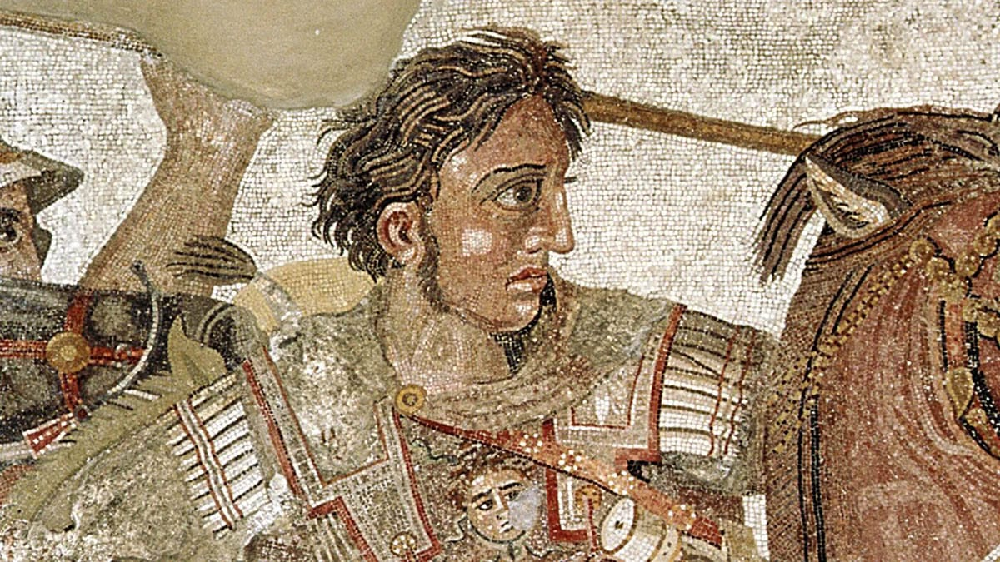

There Is Always Another Horizon
Every frontier he crossed became a road — and the roads are still there.

There Is Always Another Horizon
Every frontier he crossed became a road — and the roads are still there.
Feature map
Level-by-level features, as the figure refined them.
Name the Frontier / Make Passage
Bonus action · 1 CE.
At character creation, choose STR or DEX as your CE ability for this technique; locked thereafter. Name one meaningful visible boundary within 60 feet as a Frontier — a doorway, a wall's edge, a riverbank, a sealed threshold, a hostile frontline. Arbitrary lines in open ground are not Frontiers. When you cross the Frontier first, the crossing becomes a Passage (1 minute; you may maintain a number of Passages equal to your PB). Willing allies crossing a Passage gain +10 feet of movement for the crossing and ignore nonmagical difficult terrain.
First Across
Part of the crossing movement.
When you convert a Frontier by crossing it first, you may draw a weapon, interact with an object, or make one weapon attack as part of that movement — the crossing is the attack's delivery.
No Barrier Is the World
CE ability check vs the creator's Technique/Barrier DC.
Cursed barriers, curtains, Domain walls, and sealed doorways can be named as Frontiers. Make a CE ability check against the creator's Technique or Barrier DC: success opens a 5-foot Passage through the barrier for willing allies. Per zack's ruling: passing through a Domain wall this way grants immunity to that Domain's sure-hit, but mutual non-interference applies — you cannot harm anyone inside while immune, and cannot be harmed. The check is a breach attempt resolved before any clash; it is not a clash substitute.
Uncharted Route
Passive movement.
While moving toward a named Frontier or along a Passage, you can run across liquids and vertical surfaces. Gaps no wider than your remaining movement are traversable — the road continues where the map ends.
Beyond the Map
Passive.
Your Passages last 24 hours. You may stabilize one Long Passage through a supernatural threshold; it persists until your next long rest.
Maximum, Domain, or equivalent.
Capstone material.
To the End of the Known World
Trace a 300-foot Expedition Route, 10 feet wide. It climbs walls, crosses water and gaps, and punches through one plausible mundane obstacle. Willing allies may use their reactions to move along the Route. Each supernatural barrier on the Route requires the L6 breach check.
The Road Wears the Man
For 1 minute, every boundary you cross becomes a Passage for willing allies — no naming, no CE cost, no breach check (zack's mutual-non-interference rule still applies inside hostile Domains). Allies crossing your Passages gain double the usual bonus movement, and Passages opened during this minute last 1 hour. The horizon walks, and the world keeps up.
Build-defining options.
This technique grants Innate Technique Feats — hand-authored applications of the figure's art, available in the builder's feat picker when you select this technique.